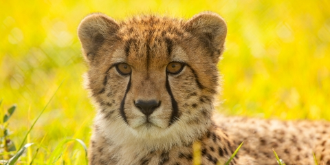

Cheetahs
Speed is key. Well maybe not to everyone, but certainly to this african feline. You spot the cheetah enjoying the shade and secretly hope that the cat will show off its special talent and run around its enclosure. The cheetah stands up. This is it! . . . Well it turns out not quite. The cheetah stands up, but starts to just page the sides of the pen back and forth. Disapointing. now you'll have to continue wondering if a cheeta runs faster than a sea lion swims. At least you got a nice close up view of some of the greatest spots on the savanah.
As you were waiting to see if the cheetah might run, you were able to learn some cool new facts:
Speed and Hunting
Before unleashing their speed, cheetahs use exceptionally keen eyesight to scan their grassland environment for signs of prey—especially antelope and hares. This big cat is a daylight hunter that benefits from stealthy movement and a distinctive spotted coat that allows it to blend easily into high, dry grasses.
When the moment is right a cheetah will sprint after its quarry and attempt to knock it down. Such chases cost the hunter a tremendous amount of energy and are usually over in less than a minute. If successful, the cheetah will often drag its kill to a shady hiding place to protect it from opportunistic animals that sometimes steal a kill before the cheetah can eat. Cheetahs need only drink once every three to four days.
Breeding and Population
Female cheetahs typically have a litter of three cubs and live with them for one and a half to two years. Young cubs spend their first year learning from their mother and practicing hunting techniques with playful games. Male cheetahs live alone or in small groups, often with their littermates.
Most wild cheetahs are found in eastern and southwestern Africa. These populations are under pressure as the wide-open grasslands they favor are disappearing at the hands of human settlers.
Click here to learn more about cheetahs.